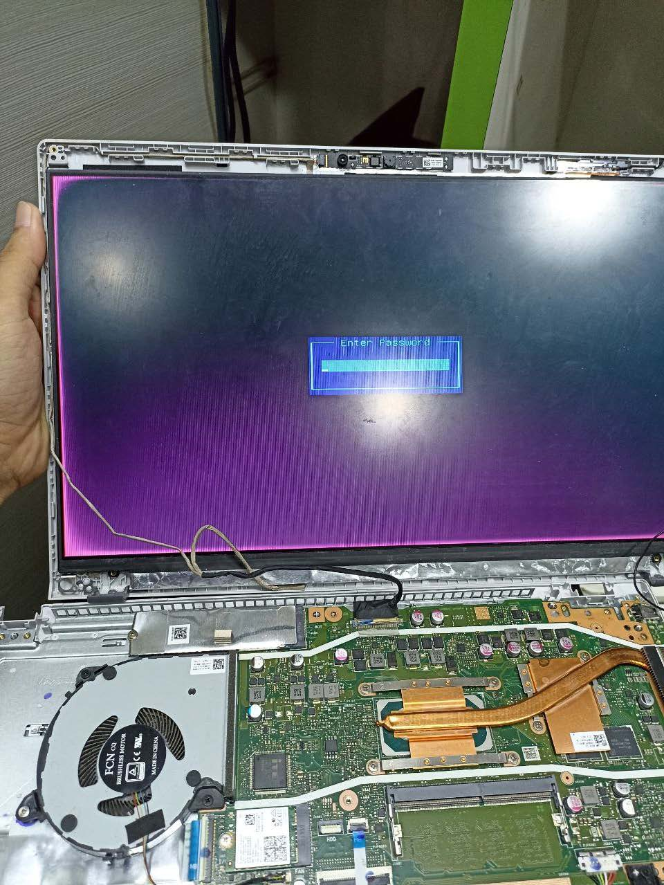
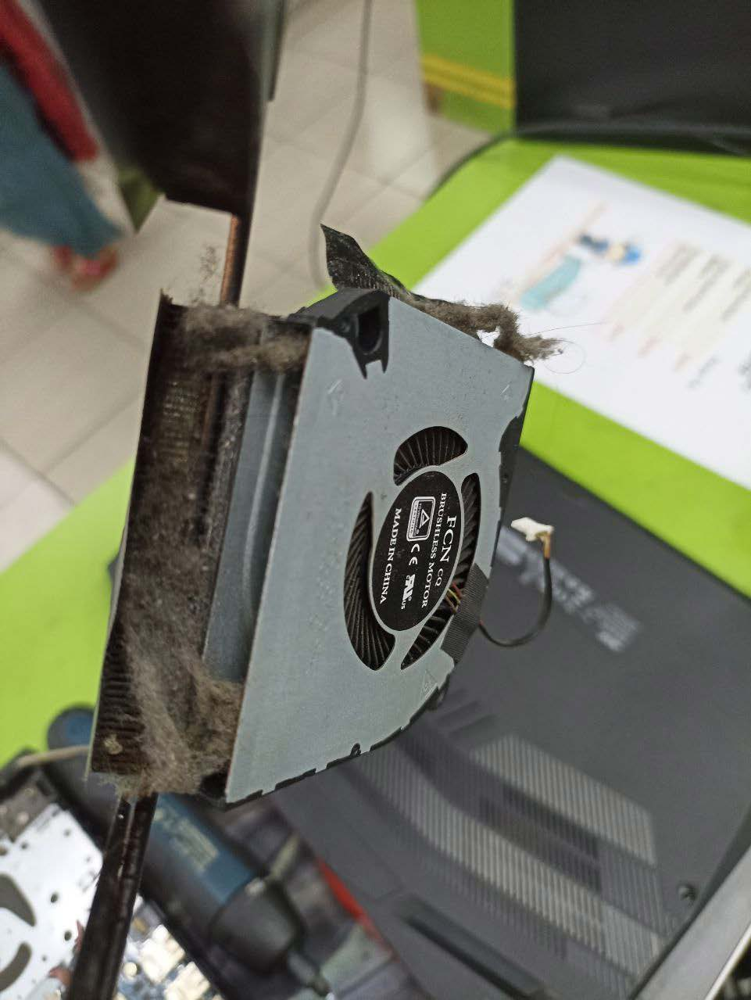
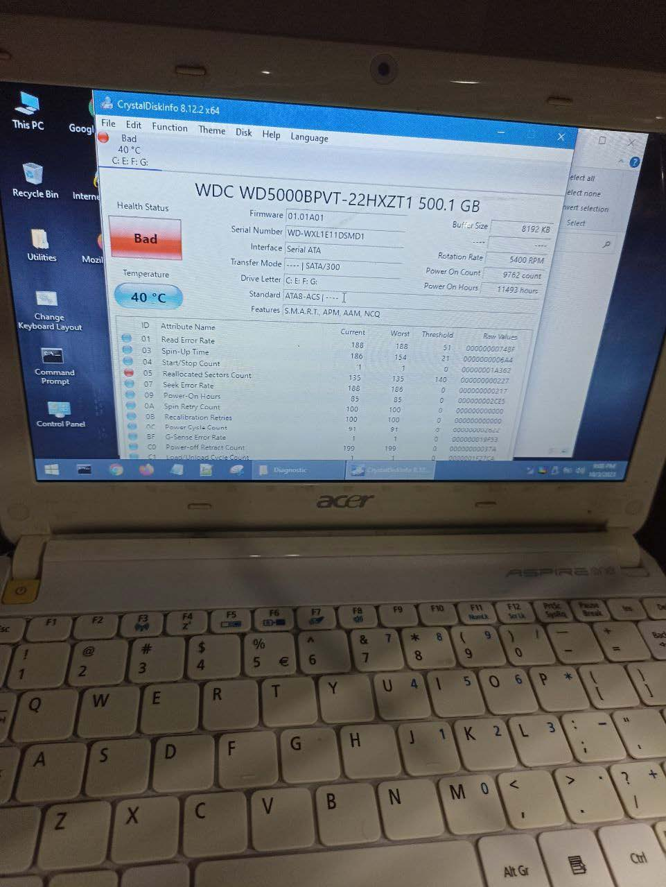
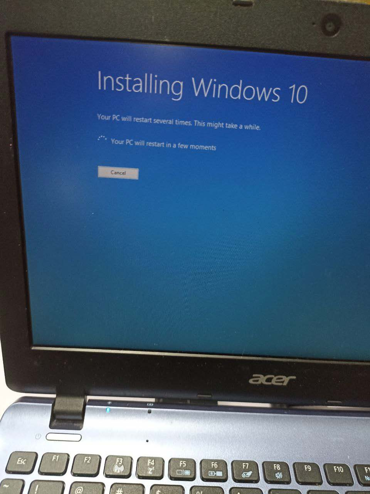
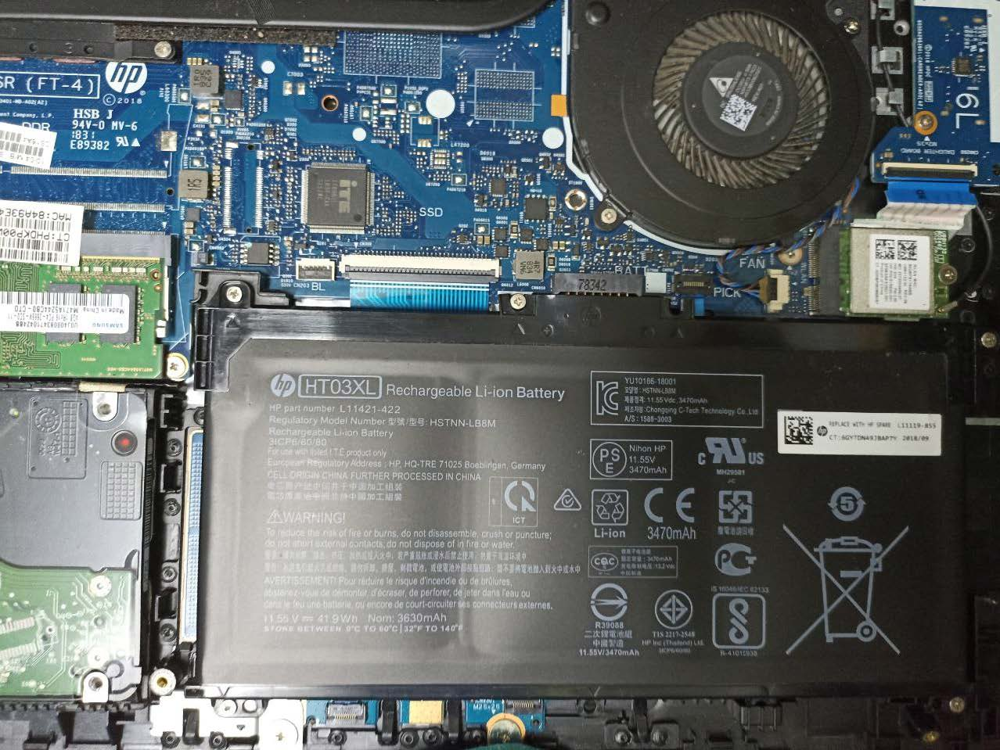
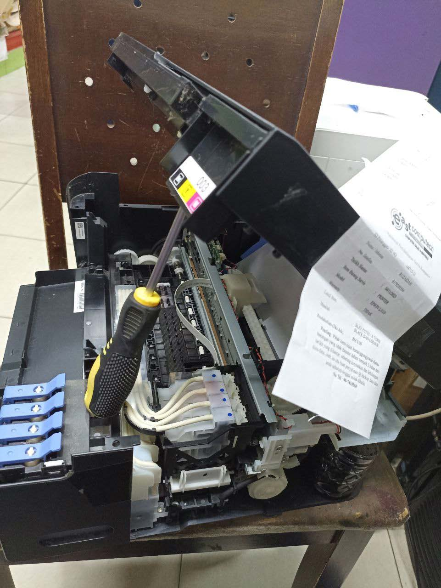
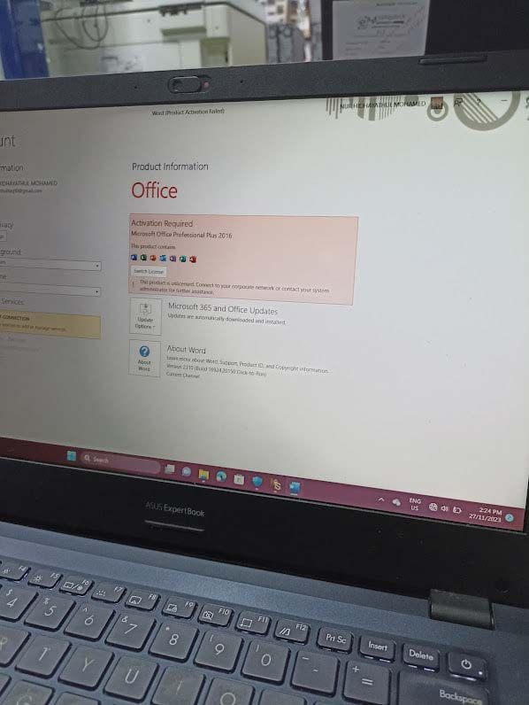
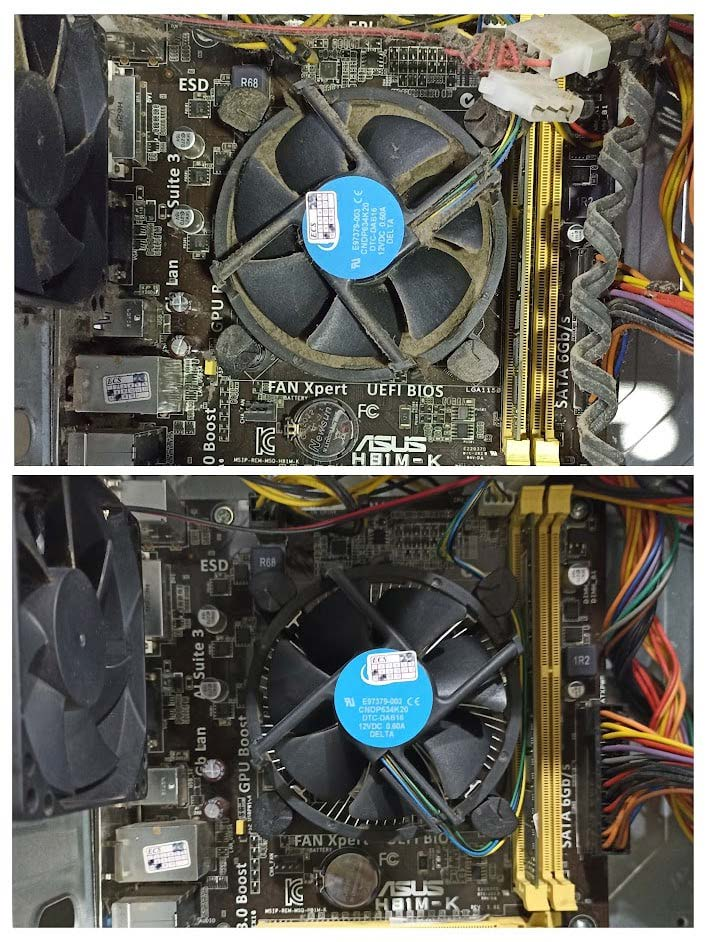

Demonstrating My
Diagnosing and repairing a malfunctioning screen on a laptop. The project required identifying the issue, sourcing replacement parts, and performing the repair.
Cleaning and maintaining the cooling system of computers and laptops. It focused on removing dust and debris from cooling fans and heatsinks to improve system performance and prevent overheating.
The Hard Disk project involved diagnosing and repairing issues related to hard disk drives (HDDs). This included data recovery, replacement of faulty drives, and performance optimization.
This project focused on formatting and reinstalling Windows on computers. It included backing up user data, performing a clean installation of the operating system, and reinstalling necessary drivers and software.
The Battery project involved diagnosing and replacing faulty batteries in laptops and other portable devices. It included testing battery health, replacing defective batteries, and ensuring proper charging functionality.
This project involved troubleshooting and repairing printer issues, including paper jams, connectivity problems, and print quality issues. It included cleaning and maintaining printers to ensure optimal performance.
The Software project involved installing, configuring, and troubleshooting various software applications, including office suites and productivity tools. It focused on ensuring proper functionality and addressing any software-related issues.
This project involved providing a range of IT services, including system diagnostics, repair, and support. It included working with clients to address technical issues and provide effective solutions.
